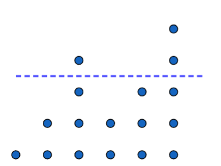
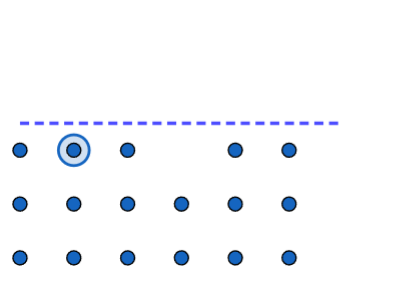
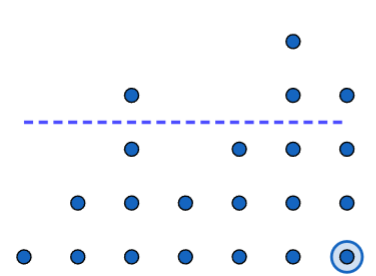
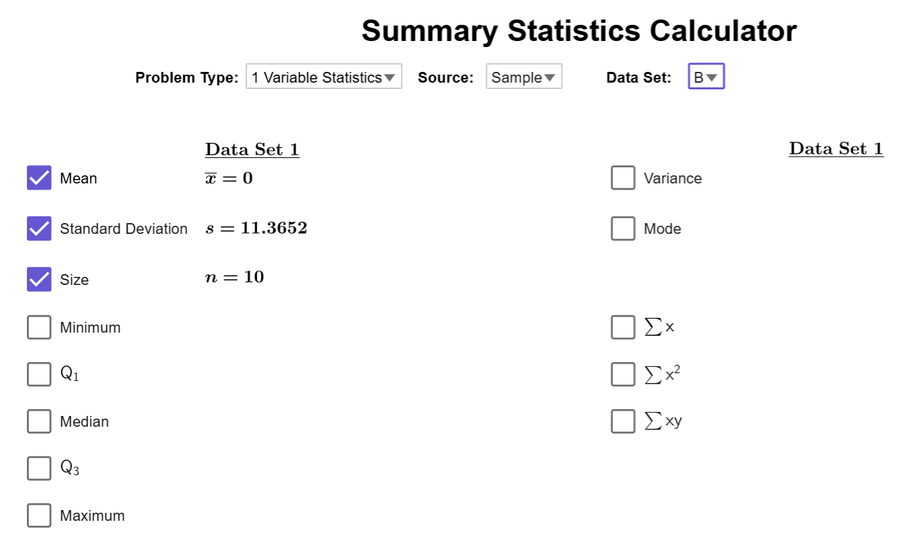
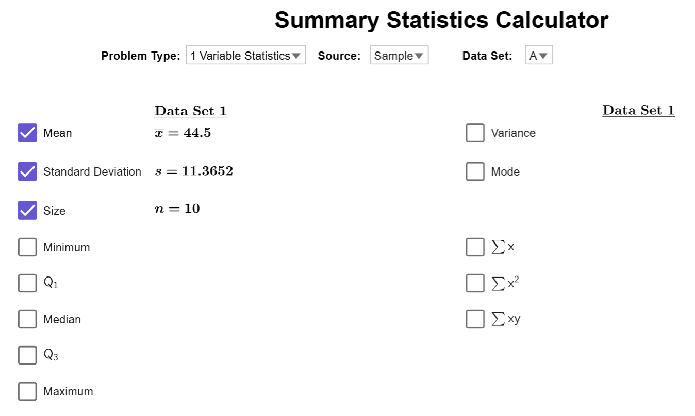
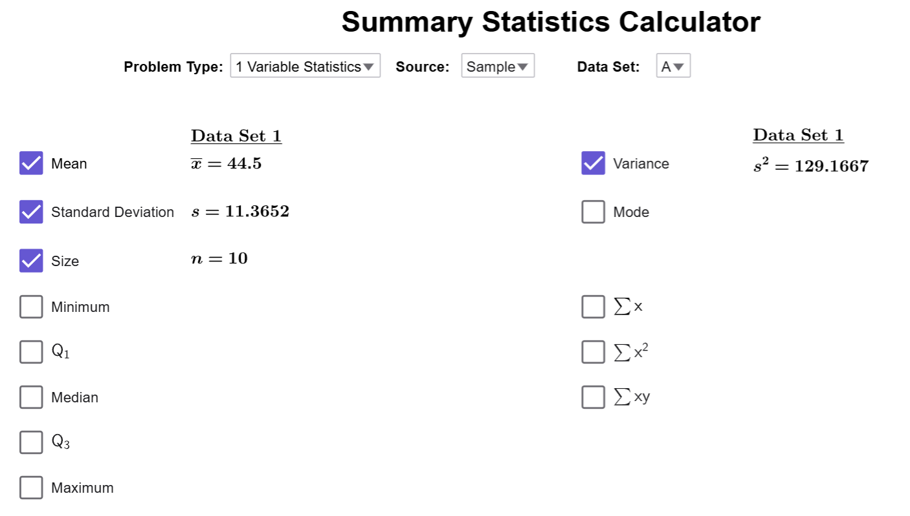

Understanding Standard Deviation
Standard deviation is one of the most important measures of variability in statistics. It tells us how much data values typically deviate from the mean. Before calculating the standard deviation, we must first understand squared deviations and variance. This section will explain these concepts step by step, leading to the definition of standard deviation and its properties.
Squared Deviation
What is Squared Deviation?
The squared deviation is the square of the value of the deviation. It is calculated as follows:
- Population Squared Deviation: \((x - \mu)^2\)
- Sample Squared Deviation: \((x - \bar{{x}})^2\)
Example
Compute the squared deviation for our example on salaries from our discussion on deviations and find their sum.
Solution
| Salary (in Thousands) | Deviation (\( x - 44.5 \)) | Squared Deviation (\((x - 44.5)^2\)) |
|---|---|---|
| 40 | -4.5 | (-4.5)^2 = 20.25 |
| 23 | -21.5 | (-21.5)^2 = 462.25 |
| 41 | -3.5 | (-3.5)^2 = 12.25 |
| 50 | 5.5 | (5.5)^2 = 30.25 |
| 49 | 4.5 | (4.5)^2 = 20.25 |
| 32 | -12.5 | (-12.5)^2 = 156.25 |
| 41 | -3.5 | (-3.5)^2 = 12.25 |
| 59 | 14.5 | (14.5)^2 = 210.25 |
| 52 | 7.5 | (7.5)^2 = 56.25 |
| 58 | 13.5 | (13.5)^2 = 182.25 |
| Total | 0 | 1162.50 |
Unlike deviations, squared deviations add up to a non-zero number since all the squared deviations are positive or zero. Now, we are in a good position to calculate the average value of the squared deviations. But, as we will see below, there are further complications when we do this.
Variance
What is Variance?
The variance of a distribution is the average value of its squared deviations. It is calculated as follows:
- Population Variance: \(\sigma^2 = \dfrac{\sum (x - \mu)^2}{{N}}\)
- Sample Variance: \(s^2 = \dfrac{\sum (x - \bar{{x}})^2}{n - 1}\)
Why does sample variance use \(n-1\)?
Let's create a new stack of dot, and again, we want to arrange the dots into stacks of
3. Suppose we are are only told the heights of six of the seven stacks:

If we ask the questions, if \(\overline{{x}}=3\) and we know the six of the seven
data points (1, 2, 4, 2, 3, 5), can we find the missing data point? The answer is
YES! If we rearrange the dots

notice that one stack is still missing a dot.
This means that the last stack should be 1 above average; in other words, it should be a
stack of four dots.

Notice that if we know the mean and all but one of
the data points, that last data point is forced to be a certain value.
This example shows that if we know the mean and all but one of the data points, the missing value is not free to vary—it’s determined by the others. Therefore, we divide by \(n-1\) to account for the fact that only \(n-1\) data points are free to vary independently. This concept is known as degrees of freedom. You’ll encounter it again in Chapters 8 and 9!
Example
Compute the variance for our example on salaries.
Solution
In our previous example, we computed the sum of the deviations squared as \[\sum(x-\overline{{x}})=1162.50.\] Since \(n=10\), we divide this number by \(n-1=9\) to get that \[s^2=\dfrac{1162.50}{{9}}\approx 129.167.\]
There are two major disadvantages to calculating variance:
- The units are squared: In this example, the units are dollars-squared, which doesn’t make sense. In general, variance always has units that are the square of the original data’s units (e.g., if the data is in meters, the variance is in meters²).
- The value is unusually large: This happens because all deviations are squared, which inflates the result.
To address these issues, we take the square root of the variance. This transforms the units back to the original scale and reduces the size of the value, giving us the standard deviation.
Standard Deviation
What is Standard Deviation?
The standard deviation is the square root of the variance. It is expressed as:
- Population Standard Deviation: \(\sigma = \sqrt{\dfrac{\sum (x - \mu)^2}{{N}}}\)
- Sample Standard Deviation: \(s = \sqrt{\dfrac{\sum (x - \bar{{x}})^2}{n - 1}}\)
What are the Important Properties of Standard Deviation
- Measures how much data values (on average) deviate from the mean.
- Always greater than or equal to zero. (If it equals zero, all the data points are the same value.)
- Larger standard deviations indicate more variation.
- Not resistant to outliers.
- Has the same units as the data set.
Example
Use the Summary Statistics Calculator to calculate the standard deviation of the salaries.
Solution
Our tool should still look like this:

We need to change the dataset back to A, and notice that the
standard deviation is checked by default. Therefore, the standard deviation is
\(s\approx 11.365\)

Quick Note
There is also a checkbox for the variance as well.

$$\tag*{\(\blacksquare\)}$$
Conclusion
Standard deviation is a powerful tool for measuring data variability. By combining the concepts of squared deviation and variance, we can determine how much data values deviate from the mean on average. In practice, standard deviation helps us interpret data distributions, detect outliers, and understand the spread of a dataset.